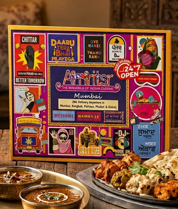
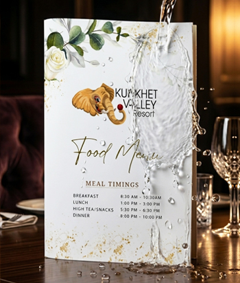
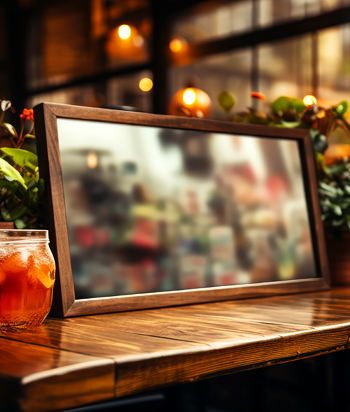
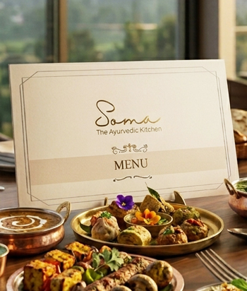
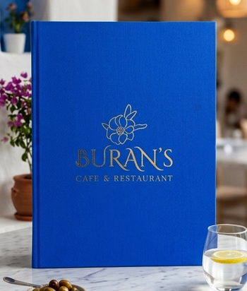

PREMIUM FOOD COURT MENU COLLECTION
Custom Food Court Menus Designed for Fast-Paced Dining
Make every ordering experience more convenient with customized Food Court Menus designed for busy food courts, shopping malls, quick-service restaurants, takeaway counters, and modern dining spaces. At Fine Fold Menus, we create professional menu solutions that combine clear food presentation, durable materials, attractive printing, and personalized branding. From compact counter menus and laminated food lists to changeable menu formats and acrylic displays, our solutions help food businesses present their offerings clearly while maintaining a consistent and professional brand identity.
“Smarter menu presentation creates a faster, more enjoyable ordering experience for every customer.”
About Food Court Menus
Smarter Menu Presentation for Busy Food Courts
Food courts bring together variety, convenience, and quick dining experiences. With multiple food counters, diverse cuisines, and customers making decisions in limited time, a clearly organized menu plays an important role in helping visitors explore food choices and place their orders confidently.
At Fine Fold Menus, we design and manufacture customized food court menu solutions that combine practical functionality with professional presentation. From single-page menus and compact counter displays to multi-page menu books and replaceable menu systems, each format can be developed around your food offerings, service environment, and branding requirements.
Whether you're operating a fast-food counter, a speciality food outlet, a café kiosk, or multiple food court locations, our menu solutions help create a consistent presentation that supports daily operations and reflects your business identity.
High Visibility
Accelerates food choices in time-sensitive dining.
Flexible Formats
From single sheets to replaceable modular systems.
Brand Consistency
Coordinated aesthetic across multi-counter outlets.
Why Choose Professional Food Court Menus?
Clear Menus. Faster Choices. Better Presentation.
In a busy food court, customers need to understand available dishes, meal combinations, and prices without unnecessary confusion. A well-structured menu makes food selection more straightforward while strengthening your counter's visual identity.
Easy Menu Navigation
Present dishes, categories, prices, and meal combinations through organized layouts that help customers quickly identify their preferred food options.
Built for Busy Environments
Choose practical materials, protective finishes, and menu formats suited to frequent handling, busy counters, and everyday food service conditions.
Consistent Brand Visibility
Reinforce your food outlet's identity with customized colours, logos, typography, and menu designs that complement your counter and overall branding.
Flexible Food Presentation
Highlight daily specials, new dishes, combo meals, or seasonal offerings through suitable printed formats and changeable menu options.
Food Court Menu Collection
Explore Menu Formats Made for Quick-Service Dining
Different food court businesses require different menu presentation solutions. From compact takeaway counters to larger dining outlets, we offer customizable menu formats that balance visual appeal, readability, and practical everyday use.

High Durability 01 / 05Laminated Food Court Menus
A practical option for busy dining counters, laminated menus provide a protective surface over printed food listings. Available in customized layouts, they are suitable for presenting meal categories, prices, combo offers, and everyday food selections.

Spill & Grease Proof 02 / 05Waterproof Food Court Menus
Designed for environments where accidental spills and moisture are common, waterproof NTR menus provide a protective menu format that combines practical handling with branded presentation. They are suitable for selected food court, café, and quick-service applications.

Countertop Stand 03 / 05Acrylic Counter Menu Displays
Present featured meals, promotional offers, QR menu information, or compact food selections through modern acrylic displays. Their clean appearance makes them a suitable choice for organized countertop presentation.

Multi-Page & Folded 04 / 05Folded & Booklet Menus
Organize extensive food selections using compact folded or multi-page menu formats. These designs are useful for outlets offering several food categories, combination meals, beverages, desserts, or speciality items.

Replaceable Inserts 05 / 05Changeable Food Court Menus
Keep frequently updated offerings organized with menu formats designed for replaceable pages or inserts. Depending on the selected system, you can update individual food sections, prices, seasonal items, or promotional information without replacing the complete outer cover.
Complete Menu Customization
Every Menu Designed Around Your Food Business
Your food court menu should be easy to use, visually appealing, and consistent with your brand identity. Fine Fold Menus offers customization options that allow food outlets to develop menu presentations suited to their available space, food categories, and operating requirements.
Custom Menu Materials
Select suitable materials and finishes, including laminated print formats, waterproof NTR options, acrylic, and other available menu cover materials according to your preferred presentation.
Sizes & Layout Formats
Choose compact counter menus, single-page designs, folded formats, portrait or landscape layouts, and multi-page presentations based on your menu content and service requirements.
Logo & Brand Personalization
Integrate your business logo, brand colours, typography, and selected printing or finishing details to maintain a recognizable visual identity across your menu presentation.
Organized Food Categories
Arrange dishes into clear sections such as starters, main courses, combo meals, beverages, desserts, and special offers, making your menu easier for customers to browse.
Printing & Finishing Options
Explore professional printing, selected protective finishes, colour combinations, and practical page presentation styles that complement your food outlet's branding and everyday use.
Ideal Applications
Perfect for Every Corner of a Modern Food Court
Our customized food court menu solutions are suited to food businesses that need clear, attractive, and practical presentations for busy customer environments.
Food Court Menu Applications
One Menu Solution, Multiple Food Categories
A well-designed food court menu helps organize different dishes, meal options, and promotional offerings into a presentation customers can easily understand.
Fast-Food Menus
Burger & Sandwich Menus
Pizza & Pasta Menus
Indian Cuisine Menus
Chinese & Asian Food Menus
Street Food Menus
Combo Meal Menus
Breakfast Menus
Snacks & Starters Menus
Beverage Menus
Desserts & Ice Cream Menus
Kids' Meal Menus
Daily Specials Menus
Promotional Offer Menus
Designed for Everyday Food Service
A Practical Menu That Keeps Up With Your Business
Food court environments demand menu solutions that are straightforward to handle, easy to read, and appropriate for frequent customer interactions. From busy lunch hours to weekend shopping crowds, your menu should help customers navigate food choices while supporting an organized counter presentation.
At Fine Fold Menus, we develop customized menu formats that consider the practical needs of quick-service dining. Compact dimensions can help manage limited counter space, structured layouts can make food categories easier to identify, and selected protective materials can provide added suitability for busy service environments.
For food outlets that regularly change prices, introduce new dishes, or run promotional offers, changeable menu formats provide additional flexibility. Suitable page-replacement systems allow selected content to be updated while maintaining the same branded outer presentation.
Whether you operate a single food counter or manage a growing network of food outlets, a thoughtfully designed menu can help maintain a coordinated visual identity while adapting to your day-to-day presentation requirements.
Space Optimized
Engineered for compact counters, order points, and high footfall areas.
Swift Decisions
Intuitive category design reduces customer queuing and decision time.
Easy Cleaning
Stain, grease, and water-resistant materials for effortless daily maintenance.
Modular Updates
Replace individual price pages or seasonal offers without redoing covers.
Features & Benefits
Professional Presentation Meets Practical Convenience
Our customized food court menu solutions bring together clear design, suitable materials, and functional presentation options to meet the needs of fast-paced food service businesses.